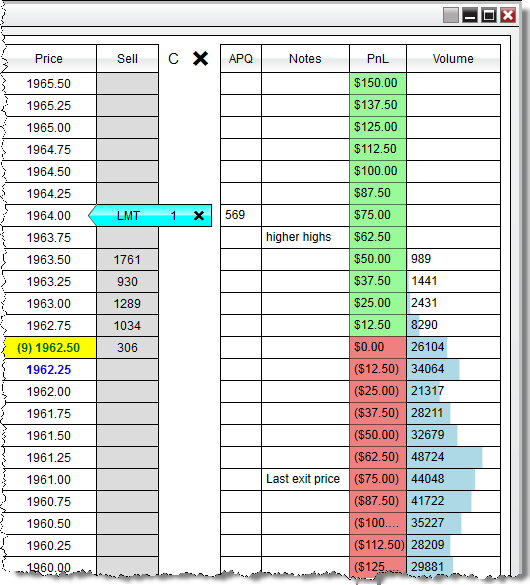
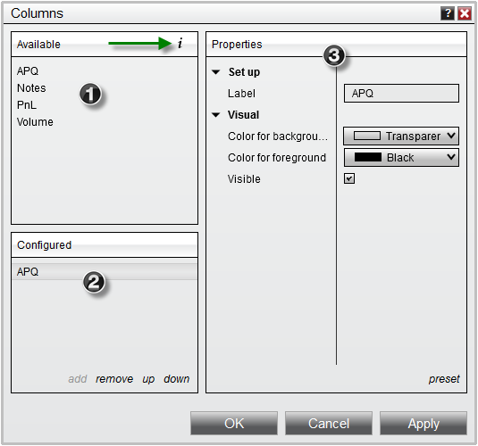
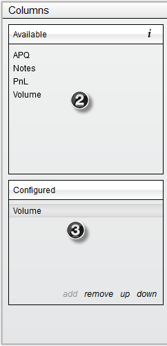
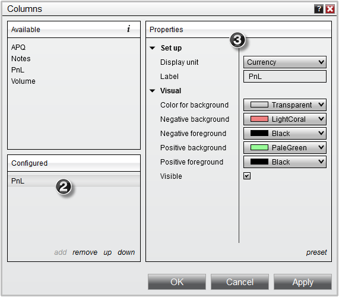
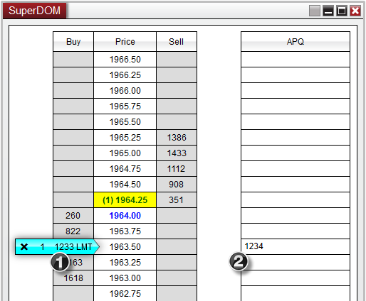
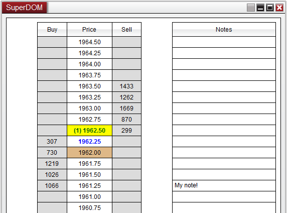
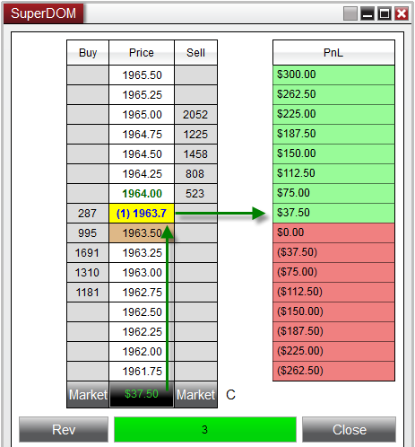
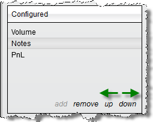
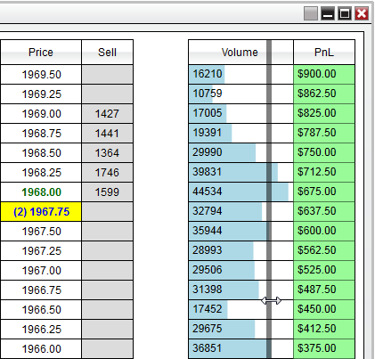
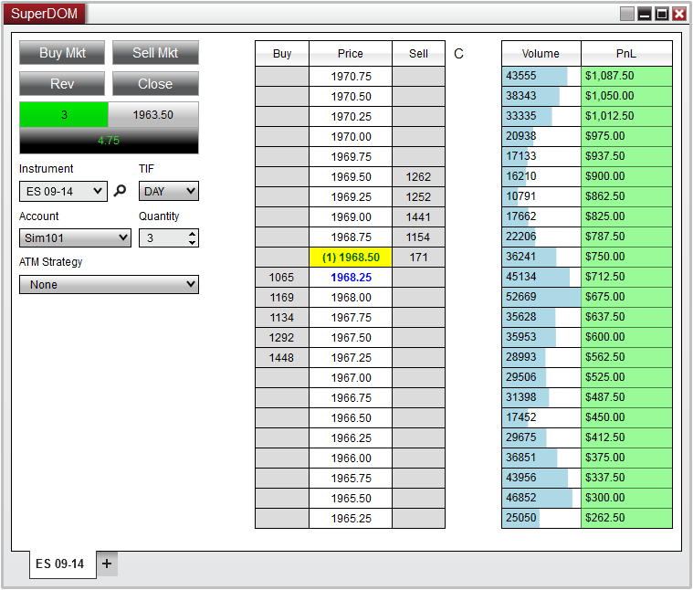

|
<< Click to Display Table of Contents >> Using SuperDOM Columns |


|
Using SuperDOM Columns
|
<< Click to Display Table of Contents >> Using SuperDOM Columns |
|
In addition to the standard Price Column used to display bid/ask data, the NinjaTrader SuperDOM has the ability to add additional columns for even further analysis for real-time market prices. NinjaTrader comes with 4 pre-built system columns (displayed in the image below), with many more which can be downloaded to extend functionality.

 Understanding the Columns window
Understanding the Columns window
The Columns window is used to add, remove and edit all columns within a SuperDOM
Accessing the Columns WindowRight mouse click on the SuperDOM window and select the menu Columns
Sections of the Columns WindowThe image below displays the three sections of the Columns window: 1.List of Available columns (a description of the selected column can be viewed by clicking on the 2.Current columns Configured on the SuperDOM 3.Selected columns Properties
 |
Adding a ColumnTo add an column to a SuperDOM: 1. Open the Columns window (see the "Understanding the columns window" section above) 2. Left mouse click on the Available column you want to add and press the Add button or simply double click on it 3. The column will now be visible in the list of Configured columns 4. The column's parameters will now be editable on the right side of the columns window (see the "How to edit a column's parameters" section below)
 |
 How to edit a column's parameters
How to edit a column's parameters
Editing a ColumnYou can customize any column from the Columns window: 1. Open the columns window (see the "Understanding the columns window" section above) 2. Highlight the column you would like to edit from the list of applied columns (as shown in the image below). 3. Once highlighted this column's parameters will be available to edit on the right hand side.

Column ParametersThe following parameters are common to most columns:
Each column will have its own set of parameters specific to that column. Please see the "Understanding the default systems columns" section below for more information on each of NinjaTrader's pre-built columns. For any custom columns that have been downloaded, please refer to the column's developer for more information on settings specific to their custom column. |
 Understanding the APQ (Approximate Position in Queue) Column
Understanding the APQ (Approximate Position in Queue) Column
APQ (Approximate Position in Queue) ColumnThe APQ column will calculate the number of contract resting ahead of your Limit orders based on the number of contracts that were advertised at the time the order was submitted, in other words - it will give you the worst possible position in the queue for your order - so you know conservatively how many contracts need to be filled before it's your orders turn.
 2. APQ will assume that your order has a queue position of 1234, and will continue to monitor the number of contracts that are advertised at this level, and give you the number of contracts that are remaining based off the volume updates that occur at that price level.
|
 Understanding the Notes Column
Understanding the Notes Column
Notes ColumnsThe Notes column will give you the ability to record custom user-defined text at any price row on the SuperDOM. This will allow you to monitor and track individual price levels with any text you may find useful.
To record a note: 1.Double click on the corresponding price row in the Notes column to enter the text-edit mode 2.Using your keyboard, type in the text you wish to display 3.Press Enter on your Keyboard accept the text.

Your custom note will now be synchronized with the price corresponding price row and will remain at that price level as your scroll up or down on the SuperDOM.
To remove a note, simply double click on the note row to re-enter the text-edit mode which will allow you to erase the text using your backspace or delete key on your keyboard. |
PnL ColumnThe PnL column will display the amount of Profit or Loss for each price row based on your average entry price. This column has a setup property to display the number of units in Currency, Percent, Pips, Points, or Ticks (please see "How to edit a column's parameters" section above)
Once there is a position opened on the selected instrument, the PnL column will then calculate what you can expect your PnL to be at each price row on the SuperDOM based on the current position size, entry price and the tick size / point value of the instrument that is being traded.
 |
 Understanding the Volume Column
Understanding the Volume Column
Volume ColumnThe Volume Column will display the number of contracts that have traded in the current session. This column has two Setup Properties to determine how the volume information is displayed. You data feed provider must support historical tick data and is using the Volume Column in Buy/Sell mode must also support Historical Bid/Ask tick data.
|
Removing a ColumnTo remove a column from your NinjaTrader SuperDOM:
•Open the Columns window (see the "Understanding the Columns window" section above), select a column from the Configured columns list, press the Remove button, and then press the OK button to exit the Columns window. |
 Customize the display of columns
Customize the display of columns
Moving/Resizing ColumnsEach column added to the SuperDOM can be individually resized or moved.
To move the order of columns in the SuperDOM window
•Right click on the SuperDOM and select Columns. •From the Columns window you can use "up" or "down" in the Configured columns section. •Left mouse click "up" to move the selected applied column left in the SuperDOM window •Left mouse click "down" to move the selected applied column right in the SuperDOM window

To resize the width of a column:
•Move your cursor to the edge of the column you wish to resize, where your cursor will turn into a left and right facing arrow •Left mouse click and drag to meet the width you desire
 Trade Control On LeftBy default, the Trade Control will be displayed on the bottom of the SuperDOM. However you can optionally set the Trade Control to be displayed on the left of the SuperDOM Price Ladder for a more compacted view which has been optimized for using multiple columns on the SuperDOM. To enable this display, simply right click on the SuperDOM window and select the Trade Control On Left menu item.
 |
In addition to the 4 system columns that come pre-built with the NinjaTrader application, you also have the ability to create custom columns of your own. For example, you could create your own custom volume column to apply to your NinjaTrader SuperDOMs.
For more information on using NinjaScript to build custom SuperDOM Columns please see the NinjaScript section of the user help guide.
The option to hire a https://ninjatraderecosystem.com/search-results/?fwp_category=programming-services to build your custom indicators is also available. |